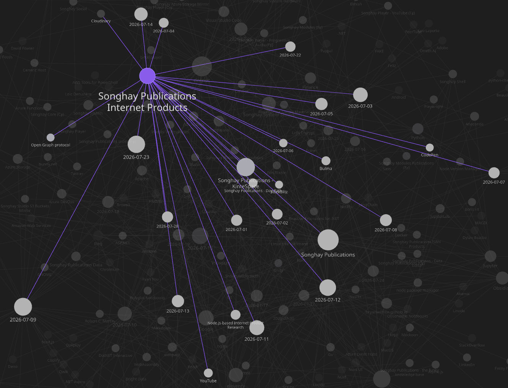
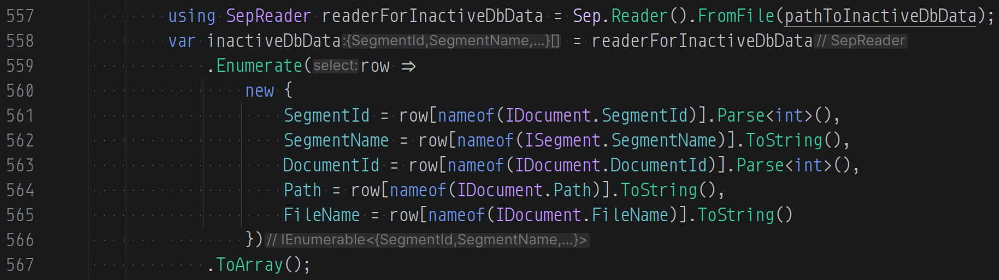
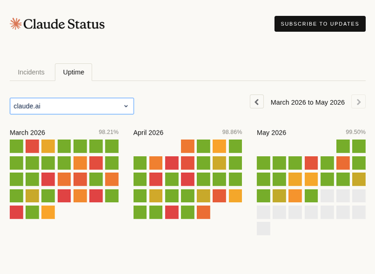
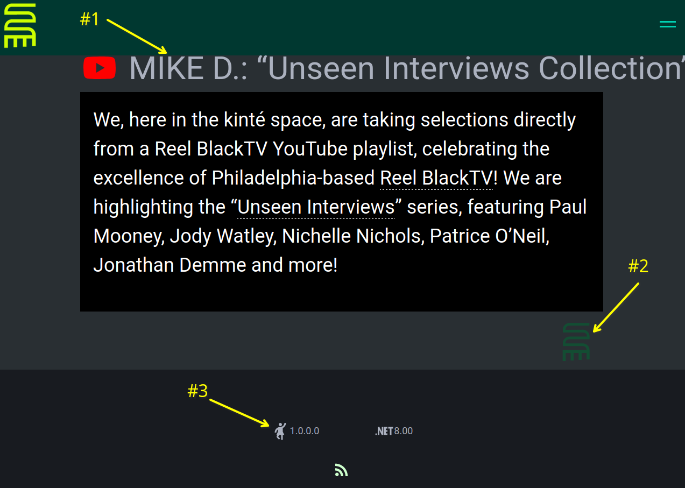
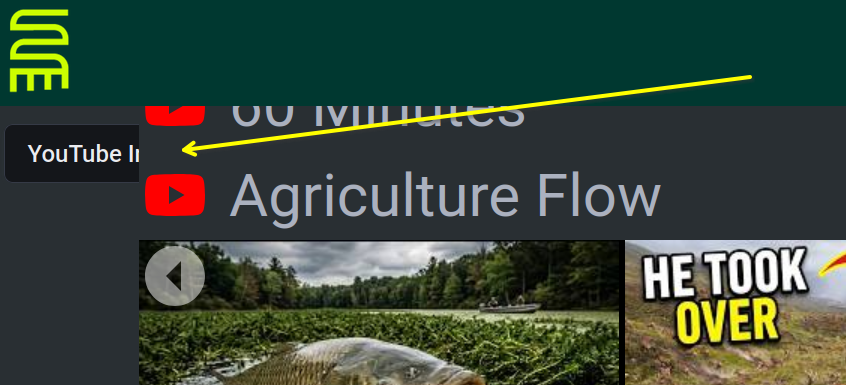
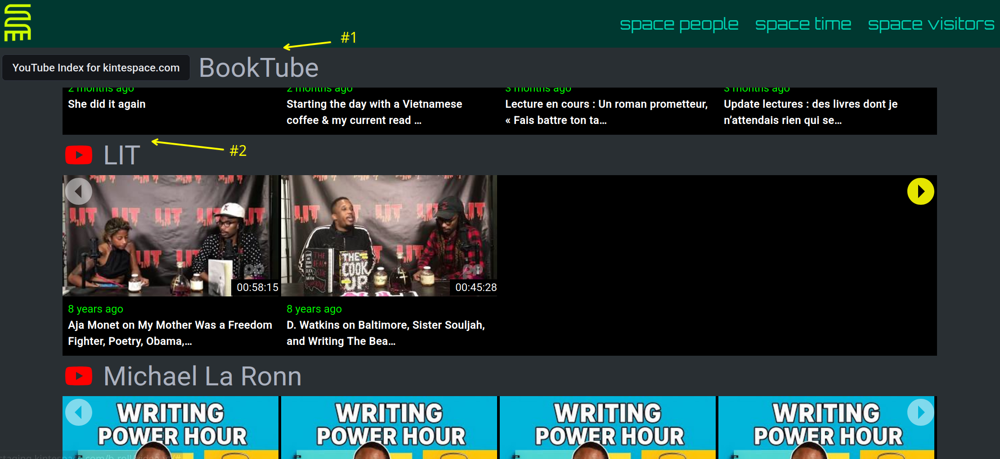
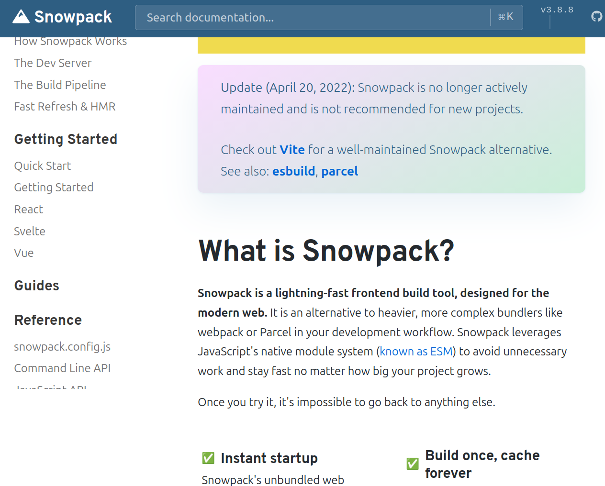
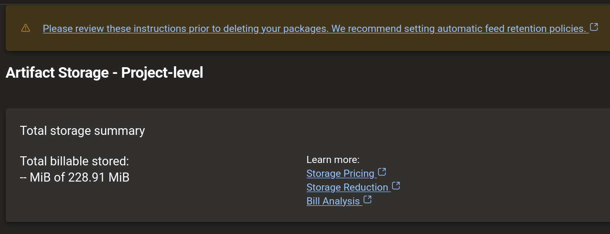
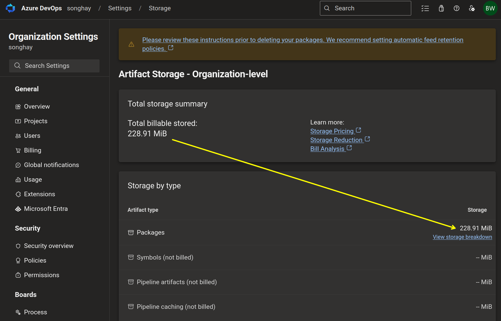
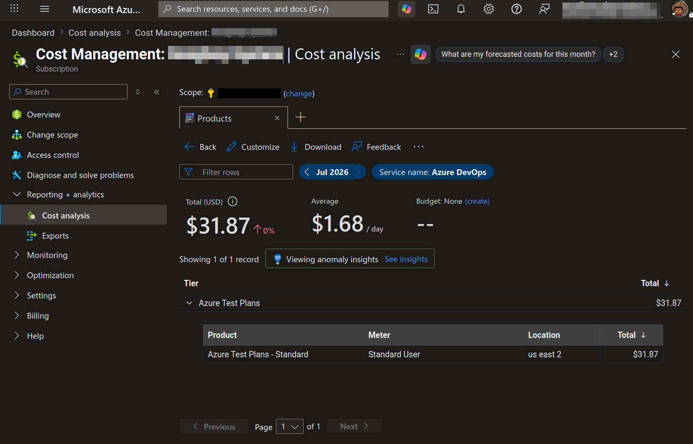

studio status report: 2026-07
Month 07 of 2026 was about releasing kintespace.com, really digging into details of Microsoft’s inflation of cloud rental costs and formally experimenting with Astro. Yes, kintespace.com was finally released on the 10th day of the month–but let’s see whether my work on Internet products exceeds 10 journaled days:

I am seeing 15 days of work which makes sense because, after using the eleventy-based pipeline for kintespace.com, I approached two other tasks:
- trying to get eleventy to work with Vite
- trying to get Astro to work with Obsidian
Also, for my job searching misery I built https://bryanwilhite.github.io/ which I regard as something I should have built years ago. It should have been obvious to me to build something that shows my skills instead of waiting around for a chance to talk about them 😐🤦 The “artistic beauty” is in building tangible things that “nobody” looks at instead of talking shit about being “undiscovered.” The true “artist” will work with or without you, the “audience”…
In keeping with this poignant obscurity, I have also used this month to update https://rasx-node-js.netlify.app/ which is a manifestation of the following breakthroughs:
- the standardization of Bulma in this Studio
- the rediscovery of the D3
- the discovery of Observable notebooks
- the uncovering and explicit use of DOMPurify
- the opportunity to declare that contemporary “vanilla” JavaScript can do things that only frameworks and libraries did in the past
It is unfair and too easy to blame having a #day-job as the sole reason why I am suddenly celebrating all of this personal growth 😐🐰 Perhaps the selected notes below will clarify:
Sep is now the official CSV-file processor of this Studio
Following up my note the beginning of this year, on my eldest son’s birthday, I can confirm that Sep exceeds expectations. I did mention that there is a Regex out there for CSV data handling but I don’t have the time or the Polyglot Notebooks technology to play with that these days 😐
the importance of the SepReader.Enumerate method
When we are first introduced to Sep, we immediately can see that it is designed to load large files with little pressure on memory. However, it may be difficult to see how we can load everything in memory and perform LINQ operations. We can do this with the SepReader.Enumerate method:

Songhay System Studio: “Most rewrites serve the engineer, not the business”
The strongest case against a rewrite is not the effort. It is memory. Code that has run in production for years is a written record of every bug someone hit and quietly fixed. The odd conditional, the retry with the suspicious timeout: most of it is scar tissue, and each scar marks an incident you never saw. Joel Spolsky made this point in 2000, calling the full rewrite the single worst strategic mistake a software company can make.
Throw the code away and you throw away the fixes. Then you meet the same bugs again, in production, in front of the same users.
Obsidian plugin: External File Embed and Link
Obsidian is not designed to support relative linking to any file external to the vault (it will fall back to an absolute file: reference [📖 docs ])—but there’s a plugin for that:
Embed and link local files outside your obsidian vault with relative paths for cross-device and multi-platform compatibility.
…
- Embed external files (Markdown, PDF, Images, Audio, Video) outside your obsidian vault.
- Create links to files outside your obsidian vault that open with system default applications.
- Reference files using virtual directories for cross-device and cross-platform compatibility.
- Provide commands to add embeds or links via file picker.
—https://github.com/oylbin/obsidian-external-file-embed-and-link
Songhay Modules Bolero (F♯): potentially devastating news 😐📰
It is possible that the Bolero project is dying out. It is stuck in the .NET 8.0 time-frame:
Bolero 0.24.39 only ships
net6.0andnet8.0TFM targets (verified by inspecting the NuGet package underlib/). When the project targetsnet10.0, NuGet silently falls back to thenet8.0build. The net8.0 compiled assemblies use WASM JS interop conventions that are incompatible with the .NET 10 WASM runtime host — specifically, thegetI32marshalling function is no longer available in the same way on thedotnet.runtime.jsinterop surface, causing theTypeErrorat render time.The misleading part is that
dotnet buildanddotnet publishboth complete successfully — the mismatch only manifests at runtime in the browser.Workaround: Revert to
net8.0until Bolero publishes packages with anet10.0target.—https://github.com/fsbolero/Bolero/issues/375#issuecomment-4061336805
Fun.Blazor is the higher-performance alternative to Bolero
When “.NET 8 and .NET 9 will reach End of Support on November 10, 2026” and Bolero is still not updated for .NET 10 then this Studio should have the lavish option of switching the b-roll player over to something like Fun.Blazor. Here are the known alternatives to Bolero in decreasing order of preference:
- Fun.Blazor (assuming it has all the features of Bolero 🐰)
- plain Blazor (requiring a complete rewrite in C♯ 🐰🐰🐰)
- Following up 2025-08-12#Blazor “Running .NET in the browser without Blazor” to-do ❓
- Feliz (implying that the b-roll player will be a React app 🐰🤮)
[!warning] Fun.Blazor is currently not upgraded to .NET 10 😐
- Fun.Blazor is not based on Elmish by default (this alone could explain the performance advantage Fun.Blazor has); Elmish is optional
- Fun.Blazor also uses CEs
Publications: “Claude’s API is notoriously unstable”

Claude’s API is notoriously unstable, yet it’s the only API provider that is compatible with a Claude subscription.
…
Claude Code is Anthropic’s primary consumer-facing engineering interface, and once you’re in, you’re locked in. Your Claude subscription—which is a cheaper version of the Anthropic API—is restricted to use with the Claude Code CLI/Desktop, Claude CoWork, or @Claude in Slack.
…
I would take OpenCode’s interface any day over Anthropic’s, but I am prohibited from applying my Claude subscription to OpenCode.
There are FOSS projects to circumvent Anthropic’s policies, which allow you to use your Claude subscription instead of an expensive Anthropic API Key
—“Anthropic's Method to Losing Goodwill in a Few Easy Steps”
Internet Products: finalizing kintespace.com 👏
I have finished addressing, supposedly, all of the bits and bobs listed yesterday:
- [x] deploy to staging and inspect 🚀👓

- clicking on the Presentation does nothing #to-do—this is not a regression 😐
- the credits button needs to stand out from backgrounds—this is a regression
- the version-numbering of Bolero is no longer detectable? #to-do
The z-order of the “sticky” dropdown needs to be sorted:

issues above addressed 👏
I have waited years to see this experience:

- this “sticky” experience is my finest
- more space is needed between thumbs #to-do
Songhay System Studio: it should be the most important tech documentary 😐
Most of the other tech documentaries in my collection are about JavaScript frameworks:

The Story of C++: The World's Most Consequential Programming Language
webpack was to be replaced by Snowpack but Vite took the world by storm 😐✨
The honorable folks of Snowpack leave this quite openly on their home page:
Update (April 20, 2022): Snowpack is no longer actively maintained and is not recommended for new projects.
Check out Vite for a well-maintained Snowpack alternative.
See also: esbuild, parcel

https://www.snowpack.dev/This is mentioned quite openly in:

VITE: The Documentary
- the effort here was to formally recognize ESM as a standard in wide release
- the initial release of Vite was tied to Vue
- Vite 2.0 was a complete rewrite (c. 2020?)
- Vite uses rollup.js which I regarded as a loser to webpack—I guess I am wrong 👴
[!important] First developed by the developer of Vue, Evan You, Vite is designed to replace webpack because it does not scale.
Because this Studio invested in WebAssembly (and my day jobs have been Microsoft biased), I have avoided building big-ass JavaScript monstrosities on top of webpack that would have led me to—at least to the desire for–something like Snowpack or Vite.
Apache: it took an IBM guy to compare with nginx 😐

Apache vs NGINX
- nginx was built with the intention of being faster than Apache—and it succeeded
- nginx is more popular for containers
Publications: “Why 55% of Americans Stopped Posting On Social Media”
A new Incogni survey suggests Americans are pulling back from social media, with more than half saying "maintaining an online presence feels like work" and 55% reporting they post less than they did five years ago. "The full study concludes that there's been a significant shift in public attitudes toward social media," reports PCMag. "Where it was once fun and relaxing, it's now growing dark and angsty..." From the report: As the chart shows, there's also a clear correlation with age. A full 60% of Gen Z respondents feel the pain of maintaining a social presence. Perhaps they have a niggling hope that they might still be discovered as an influencer? Those of us in the Boomer category are clearly more relaxed about it, with just 38% saying that maintaining a social presence feels like work. The survey quizzed respondents about how they feel when they don't keep up with checking their socials and, by extension, how they'd feel if they just plain quit. They were given choices, both positive (peace, relaxation, and relief) and negative (anxiety, fear of missing out, and discomfort).

Vite and ASP.NET: I am confident that Microsoft will release project templates based on Vite… #to-do
…meanwhile, we have Shawn Wildermuth:

Coding Shorts: Using Vite in ASP.NET Core Projects
AzDO: what the hell is all this artifact storage 😧❓


Azure Artifacts provides developers with a streamlined way to manage all their dependencies from a single feed. These feeds serve as repositories for storing, managing, and sharing packages, whether within your team, across organizations, or publicly online. Azure Artifacts supports multiple package types, including NuGet, npm, Python, Maven, Cargo, and Universal Packages.
…
Azure Artifacts provides 2 GiB of free storage for each organization. This free tier is designed to help you evaluate if Azure Artifacts fits your workflow. As your organization begins handling more critical tasks, increase artifacts storage limit to ensure you have the appropriate resources.
I am being charged almost $2 a day for this:

Netlify “On-demand Builders” deprecated? 😐
On-demand Builders are serverless functions used to generate web content as needed that’s automatically cached on Netlify’s Edge CDN. They enable you to build pages for your site when a user visits them for the first time and then cache them at the edge for subsequent visits.
It appears that on-demand Builders are considered deprecated:
For better performance and fewer function invocations, consider using serverless functions with the
durabledirective instead of On-demand Builders.
Internet Products: in this Studio it’s official: eleventy does not work with Vite correctly 😐😠
In addition to over two days of time wasted, the digitized public provides me with two clues:
1. a developer of a Vite plugin for eleventy warns us that both Vite and eleventy process *.html files
This is a message from a developer from over five years ago (because he has not updated the entire repo in over five years):
Because Vite has built-in handling for HTML files, it's recommended to not use
.htmlfiles with Eleventy. If you're writing Nunjucks, for instance, use.njkinstead of.html. Don't rely on Eleventy's default template handling for HTML files is what I'm saying.—https://github.com/Snugug/vite-plugin-eleventy#important-integration-caveats
This conflict over HTML-file processing should mean that Vite and eleventy cannot work together properly. Perhaps I am misunderstanding the meaning? I do notice that the “starter template” for the eleventy-plugin-vite plugin does not use *.html files as eleventy templates. Dropping HTML templates would be seriously disruptive to my Studio pipeline.
2. the guy who used to work on Slinkity has moved on to work on Astro 😲
Here is a message from the Slinkity guy:
⚠️ Slinkity is no longer maintained. The project owner (@bholmesdev) now works on Astro full-time. If you want to build component-driven content sites, give Astro a try! If you're committed to 11ty and want to use client components, consider 11ty's WebC project.
I have walked through the friendly npm init slinkity experience and I notice that, by default, Slinkity is also not using *.html files as eleventy templates. It is using a Markdown file, index.md 😐
signs point toward none of these issues being “fixed” 🛑
- The conflict over HTML-file processing between Vite and eleventy does not feel trivial to me; it feels fundamental to Vite.
- Vite likely has no way to easily “turn off” its handling of HTML files in order to not interfere with eleventy.
- Zach Leatherman has “Build Awesome” newness on his plate surely making this HTML template “fix” a non-priority.
what needs to be “fixed”?
I think the short term “fix” to my issues here is to warn others not to use HTML templates.
Steps to reproduce:
- build a simple eleventy publication, depending on
@11ty/eleventy-plugin-viteand using an HTML file as the Index template (index.html) and HTML files for the layouts. - add the conventional
_data/settings.jsonfile and use the HTML templates to render data from this file - run
npm startand ornpm buildand the settings data will not be rendered in any output base on HTML templates (also, Vite my try to add its_sitedirectory to your build output 😐)
Astro even talks publicly about a relationship with WebAssembly 😲
Astro supports loading WASM files directly into your application using the browser’s
WebAssemblyAPI.—“WASM”
open pull requests on GitHub 🐙🐈
- https://github.com/BryanWilhite/Songhay.HelloWorlds.Activities/pull/14
- https://github.com/BryanWilhite/dotnet-core/pull/67
sketching out development projects

retire the old🚜🧊kinte-spacerepo for kintespace.com- use a Jupyter Notebook to track finding and changing Amazon links to open source links in the kinté space repo 📓⚙
- use a Jupyter Notebook to convert flickr links to Publications (responsive image) links in the kinté space repo 📓⚙
- convert Songhay Day Path Blog repo to the relevant conventions shown in the diagram above 🔨🚜
- re-release SonghaySystem.com in Astro on Netlify 🚀
- start development of Songhay Publications Index (F♯) experience for WebAssembly 🍱✨
- start development of Songhay Publications - Data Editor to establish a GUI for
*Shelland provide visualizations and interactions for Publications data 🍱✨